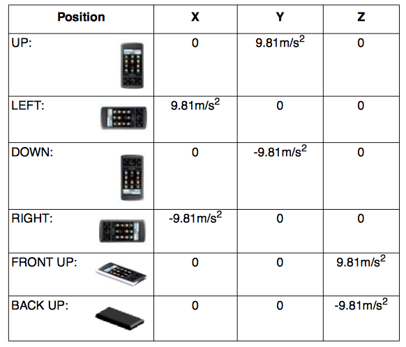

Android Sensors Overview
1. What is a Sensor?
A sensor is a device that detects and responds to some type of input from the physical environment. The specific input could be light, heat, motion, moisture, pressure, or any one of a great number of other environmental phenomena. The output is generally a signal that is converted to human-readable display at the sensor location or transmitted electronically over a network for reading or further processing.
Source: whatis.techtarget.com
2. Types of Sensors
The Android platform supports three broad categories of sensors:
- Motion sensors These sensors measure acceleration forces and rotational forces along three axes. This category includes accelerometers, gravity sensors, gyroscopes, and rotational vector sensors.
- Environmental sensors These sensors measure various environmental parameters, such as ambient air temperature and pressure, illumination, and humidity. This category includes barometers, photometers, and thermometers.
- Position sensors These sensors measure the physical position of a device. This category includes orientation sensors and magnetometers.
Note: Location Sensors will not be studied in this overview.
Source: Sensors Overview - Android Developers
3. Android Sensor API
SensorManager: is the Android system service that gives an app access to hardware sensors.Sensor: is the Android representation of a hardware sensor on a device.SensorEventListener: is an interface that provides the callbacks to alert an app to sensor-related events.SensorEvent: is the data structure that contains the information that is passed to an app when a hardware sensor has information to report.
4. SensorManager
SensorManager lets you access the device's sensors. Get an instance of this class by calling Context.getSystemService() with the argument SENSOR_SERVICE.
Always make sure to disable sensors you don't need, especially when your activity is paused. Failing to do so can drain the battery in just a few hours. Note that the system will not disable sensors automatically when the screen turns off.
public class SensorActivity extends Activity, implements SensorEventListener {
private final SensorManager mSensorManager;
private final Sensor mAccelerometer;
public SensorActivity() {
mSensorManager = (SensorManager)getSystemService(SENSOR_SERVICE);
mAccelerometer = mSensorManager.getDefaultSensor(Sensor.TYPE_ACCELEROMETER);
}
protected void onResume() {
super.onResume();
mSensorManager.registerListener(this, mAccelerometer, SensorManager.SENSOR_DELAY_NORMAL);
}
protected void onPause() {
super.onPause();
mSensorManager.unregisterListener(this);
}
public void onAccuracyChanged(Sensor sensor, int accuracy) {
}
public void onSensorChanged(SensorEvent event) {
}
}
Note: Don't use this mechanism with a Trigger Sensor, have a look at TriggerEventListener. TYPE_SIGNIFICANT_MOTION is an example of a trigger sensor.
5. Sensor
Sensor represents a hardware sensor on a device.
- Interesting public methods:
getMaximumRange()returns the maximum range the sensor can measure in the regular units reported by the sensor.getResolution()reports the resolution of the sensor, in the regular units reported by the sensor.
6. SensorEventListener
SensorEventListener is used for receiving notifications from the SensorManager when sensor values have changed. In this class there are two public methods:
onAccuracyChanged(Sensor sensor, int accuracy): Called when the accuracy of a sensor has changed.abstract void onSensorChanged(SensorEvent event): Called when sensor values have changed.
7. SensorEvent
SensorEvent is the data structure that contains the information that is passed to an app when a hardware sensor has information to report. The data members of the SensorEvent are:
SensorEvent.accuracy: The accuracy of the event. Can have the following values:SensorManager.SENSOR_STATUS_ACCURACY_HIGHSensorManager.SENSOR_STATUS_ACCURACY_MEDIUMSensorManager.SENSOR_STATUS_ACCURACY_LOWSensorManager.SENSOR_STATUS_UNRELIABLE
SensorEvent.sensor: An instance of theSensorclass that generated theSensorEvent.SensorEvent.timestamp: The time in milliseconds when theSensorEventoccurred.SensorEvent.values: An array of values that represent sensor data.
Definition of the coordinate system used by the SensorEvent API.

SENSOR_DELAY_FASTEST
SENSOR_DELAY_GAME
SENSOR_DELAY_UI (Suitable for usual user interface functions, like rotating the screen orientation.)
SENSOR_DELAY_NORMAL (The default value.)
In Android 4.0.3, these are hard-coded to be 0, 20, 67, and 200 milliseconds, respectively. You can also specify your own delay in microseconds.
#### 9. Raw Sensors and Synthetic Sensors
The sensors referenced through the Sensor class may be of two types:
Raw sensors give raw data from a sensor, and one raw sensor corresponds to one actual physical component inside the Android device.
Sensor.TYPE_LIGHT
Sensor.TYPE_PROXIMITY
Sensor.TYPE_PRESSURE
Sensor.TYPE_TEMPERATURE (deprecated)
Sensor.TYPE_ACCELEROMETER
Sensor.TYPE_GYROSCOPE
Sensor.TYPE_MAGNETIC_FIELD
Sensor.TYPE_RELATIVE_HUMIDITY
Sensor.TYPE_AMBIENT_TEMPERATURE
Synthetic (or composite or virtual) sensors provide an abstraction layer between application code and low-level device components by either combining the raw data of multiple raw sensors, or by modifying the raw sensor data to make it easier to consume.
Sensor.TYPE_ROTATION_VECTOR
Sensor.TYPE_LINEAR_ACCELERATION
Sensor.TYPE_GRAVITY
Sensor.TYPE_ORIENTATION (deprecated)
Synthetic sensors do not necessarily have consistent implementation across different devices. For example, some devices may use the gyroscope to determine rotation vector values while others do not. Differences in hardware or sensor synthesis implementations can cause synthetic sensors on some devices to provide better readings than synthetic sensors on other devices. Although these differences exist, it is still generally preferable to utilize synthetic sensor data over raw sensor data. Sensors tend to be designed to provide good results for a device’s specific sensor hardware.
#### 10. Sensor.TYPE_ACCELEROMETER
All values are in SI units (m/s^2) and measure the acceleration of the device minus the force of gravity.
Acceleration sensors return sensor events for all 3 axes at a constant rate defined by setDelay().
x: Acceleration on the x-axis
y: Acceleration on the y-axis
z: Acceleration on the z-axis
Note that the readings from the accelerometer include the acceleration
due to gravity (which is opposite to the direction of the gravity vector).
Examples:
The norm of <x, y, z> should be close to 0 when in free fall.
When the device lies flat on a table and is pushed on its left side
toward the right, the x acceleration value is positive.
When the device lies flat on a table, the acceleration value is +9.81,
which correspond to the acceleration of the device (0 m/s^2) minus the
force of gravity (-9.81 m/s^2).
When the device lies flat on a table and is pushed toward the sky, the
acceleration value is greater than +9.81, which correspond to the
acceleration of the device (+A m/s^2) minus the force of
gravity (-9.81 m/s^2).
Table 1 lists the acceleration values read from the sensor corresponding to each position of a device.

Table 1: Acceleration Values on each Axis for Different Positions
11. References
- sensors.h. Android Source Code.
- Book: Professional Android Sensor Programming
- Android Sensors Overview. API Guides - Android Developers.
- Android Sensor - Tutorial. Lars Vogel.
- Video: Sensor Fusion on Android Devices: A Revolution in Motion Processing. Google Tech Talk 2010.